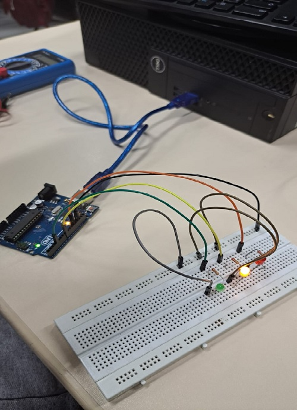
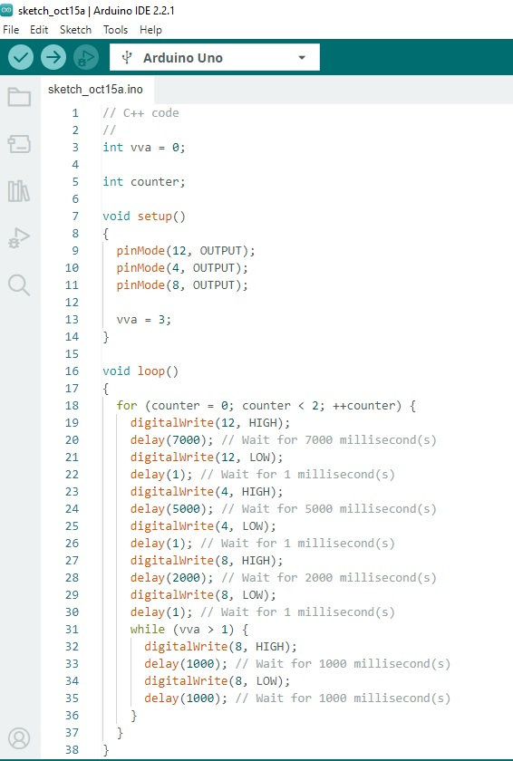

Criado dia: 17/10/2024
ARDUÍNO na prática – Semáforo Simples

Vídeo montagem prática
Código C++ da IDE ARDUÍNO

Código C++
// C++ code
//
int vva = 0;
int counter;
void setup()
{
pinMode(12, OUTPUT);
pinMode(4, OUTPUT);
pinMode(8, OUTPUT);
vva = 3;
}
void loop()
{
for (counter = 0; counter < 2; ++counter) {
digitalWrite(12, HIGH);
delay(7000); // Wait for 7000 millisecond(s)
digitalWrite(12, LOW);
delay(1); // Wait for 1 millisecond(s)
digitalWrite(4, HIGH);
delay(5000); // Wait for 5000 millisecond(s)
digitalWrite(4, LOW);
delay(1); // Wait for 1 millisecond(s)
digitalWrite(8, HIGH);
delay(2000); // Wait for 2000 millisecond(s)
digitalWrite(8, LOW);
delay(1); // Wait for 1 millisecond(s)
while (vva > 1) {
digitalWrite(8, HIGH);
delay(1000); // Wait for 1000 millisecond(s)
digitalWrite(8, LOW);
delay(1000); // Wait for 1000 millisecond(s)
}
}
}